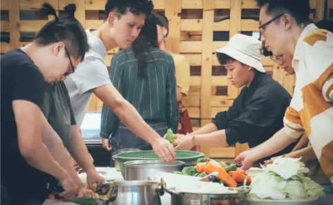
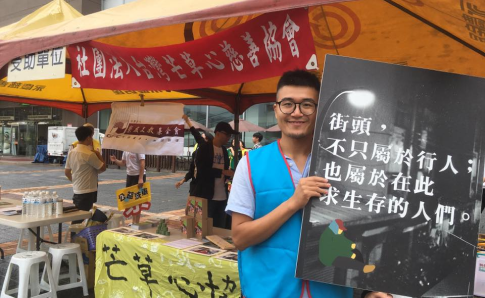
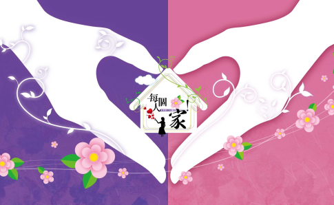
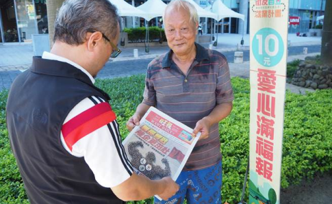
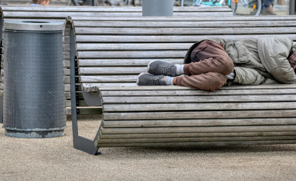
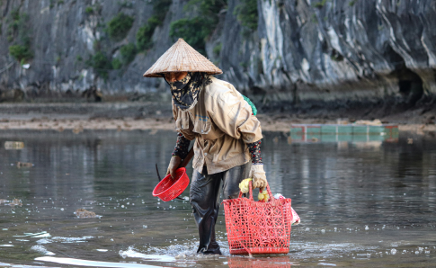

送愛者
無家者
- 石頭湯計畫
- 遊民外展服務
- 安心家園
- 街友販售計畫
石頭湯計畫
人生百味「人生百味」是一個關注無家者的社會團體，他們發起了「石頭湯計畫」，邀請志願者與無家者共同煮湯、用餐，並藉此建立關係，提供情感支持。這個計畫不僅讓無家者感受到社會的關懷，也促使志願者更深入了解無家者的生活境況。
遊民外展服務
芒草心慈善協會「芒草心慈善協會」長期致力於服務無家者，他們的外展服務團隊定期深入街頭，為無家者提供食物、衣物和生活用品，並協助他們尋找工作機會，提供職業訓練，幫助其重新融入社會。
安心家園
撒瑪黎雅婦女關懷協會位於台中的「撒瑪黎雅婦女關懷協會」專門服務女性無家者，提供住宿、用餐、洗澡等基本生活需求，並提供心理輔導和職業訓練，協助她們重建生活。
街友販售計畫
大誌雜誌「大誌」是一個由無家者販售的雜誌，每本售價100元，無家者可獲得其中的50元。這個計畫提供了無家者一個合法且有尊嚴的收入來源，並讓社會大眾有機會透過購買雜誌來支持他們。
- 家暴與財務困難
- 生意失敗與高利貸
- 婚姻破裂與心理健康
- 高齡勞工與退休無保障
家暴與財務困難
阿雄（化名）是一位原住民中年男子，年輕時在工地打工，收入不高但生活穩定。然而，他的伴侶因家暴問題而離他而去，阿雄陷入失落與憂鬱，後來開始酗酒，工作表現也因此下降。接著他因酒後發生意外，無法再工作，積蓄也耗盡。因為無法償還房貸，阿雄最終失去了家，開始在台北街頭流浪。
生意失敗與高利貸
阿強（化名）曾經是小企業的經營者，但因市場變遷、投資失利，生意慘賠。他為了補上虧損，不得已向地下錢莊借款，導致負債累累，最終無法還清債務。債務壓力使得他與家人關係緊張，家人不願再接納他。他被迫離家，開始在桃園車站附近的公園棲身，靠拾荒為生。
婚姻破裂與心理健康
小美（化名）年輕時有過一段婚姻，婚後育有一子，但因與丈夫的關係惡化，最終離婚。丈夫爭取到了孩子的撫養權，小美因此失去了家人支持，心理上受到巨大打擊，患上了憂鬱症。由於長期失業，小美無力支付房租，不得已流浪街頭。雖然她想重新站起來，但心理健康問題讓她難以融入工作環境，生活陷入惡性循環。
高齡勞工與退休無保障
老李（化名）是一位年近70的老年人，年輕時從事體力勞動工作，沒有退休金。年老體弱後，他的工作機會逐漸減少，健康也逐漸下滑，最後失去了工作能力。老李因無法繼續負擔生活開銷，無力支付房租，被迫成為無家可歸者。他平時在台北車站附近找尋臨時工作，但年紀大、體力不足，生活日益艱難。
